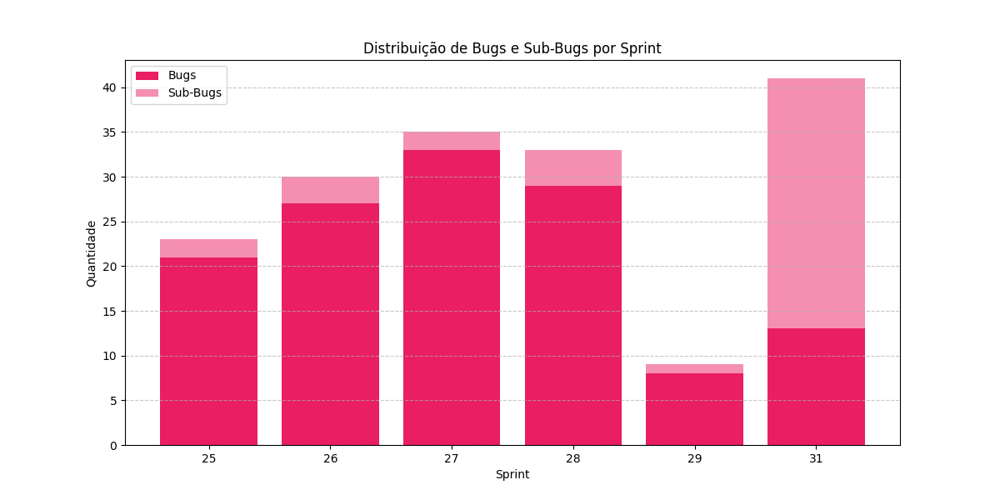
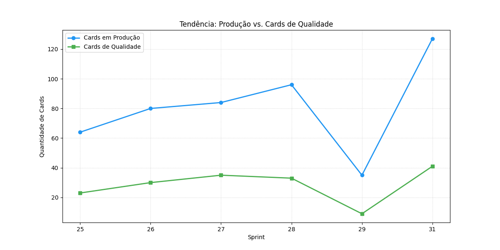

O setor de QA da BIUD garante excelência nas entregas do BIUD V3 – ESG SEBRAE e demais produtos — com processos estruturados, automações, observabilidade e uma cultura de qualidade que permeia todo o ciclo de desenvolvimento.
O time de QA da BIUD atua de forma integrada ao desenvolvimento, garantindo qualidade desde a concepção até a entrega em produção. Não somos um gargalo — somos um acelerador de confiança.
O Portal de QA da BIUD centraliza todos os processos, padrões e ferramentas que garantem a excelência das nossas entregas — desde as definições de pronto (DoR / DoD) até os templates de abertura de bugs, regras de negócio e modelos de execução de teste.
Atuamos de forma integrada ao desenvolvimento no projeto BIUD V3 – ESG SEBRAE, cobrindo desde o refinamento do backlog até o pós-deploy: testes manuais, automação, análise de causa raiz (RCA), KPIs de qualidade, severidade/prioridade de bugs e observabilidade.
Indicadores gerados a partir dos dados reais do BIUD V3 – ESG SEBRAE. Sprints 25–31 via relatórios exportados; Sprints 33–39 via Jira.
Cada barra representa o total de bugs e sub-bugs registrados no Jira durante o sprint. O pico no Sprint 31 coincide com a equalização do ambiente de HMG e a entrada de novas funcionalidades de pagamento. A queda no Sprint 29 reflete o efeito da esteira de bug estruturada nas sprints anteriores.

A linha azul mostra o volume de cards entregues em produção por sprint. A linha verde representa os cards tratados pelo QA (revisão, validação, critérios de aceite). A distância entre as linhas indica o gap de cobertura de qualidade — quanto menor, melhor o controle do QA sobre o que vai para produção. O aumento da linha verde a partir do Sprint 29 reflete a implantação dos processos de DoR/DoD e da esteira de bug.

Comparativo entre bugs que escaparam para produção (BUG) e falhas interceptadas em homologação (SUB-BUG). A razão SUB-BUG/BUG > 1 indica que o QA captura mais falhas antes do deploy do que as que chegam ao usuário final. Baseline pré-QA (Sprints 25–29): razão média de 0,10 — quase nenhuma falha era interceptada antes de produção.
Fluxo de trabalho estruturado que garante qualidade em cada etapa do ciclo de desenvolvimento.
Todo o conhecimento do time de QA centralizado no portal interno — do padrão de abertura de cards ao modelo de execução de testes. Projeto: BIUD V3 – ESG SEBRAE.
Ferramentas de ponta que suportam nossa metodologia e maximizam a eficiência do time de QA.
Problemas resolvidos, melhorias implementadas e o impacto mensurável no negócio BIUD.
Histórico real desde 02/02/2026 — entrada do QA na BIUD. Hoje, —, estamos na Sprint — .
| Caso de Teste | Tipo | Status |
|---|---|---|
| 🔐 Autenticação · 2 casos | ||
| Login com Autenticação AMEI | UI | ✅ Feito |
| Logout do Sistema | UI | ✅ Feito |
| 🏁 Onboarding · 5 casos | ||
| Seleção de Empresa | UI | ✅ Feito |
| Carregamento do Dashboard Inicial | UI | ✅ Feito |
| Navegação pelo Menu Lateral | UI | ✅ Feito |
| Validação de Porte na Seleção CPE (ME/EPP/MEI) | UI | ✅ Feito |
| Persistência de Dados no Cadastro | UI | ✅ Feito |
| 🌱 Jornada ESG · 2 casos | ||
| Acesso ao Questionário de Diagnóstico | UI | ✅ Feito |
| Navegação entre Perguntas do Questionário | UI | ✅ Feito |
Ciclo de palestras técnicas semanais da BIUD — toda quarta-feira às 15h um membro do time compartilha conhecimento com toda a engenharia.
O QA não é um filtro no final — é uma mentalidade que permeia cada decisão de produto e engenharia da BIUD.
Toda quarta · 15h · Aberto a todos da BIUD. Preencha e enviaremos sua proposta para o Rogério.